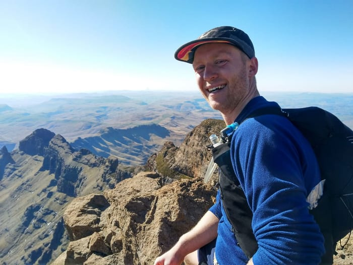
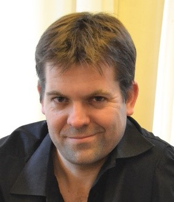
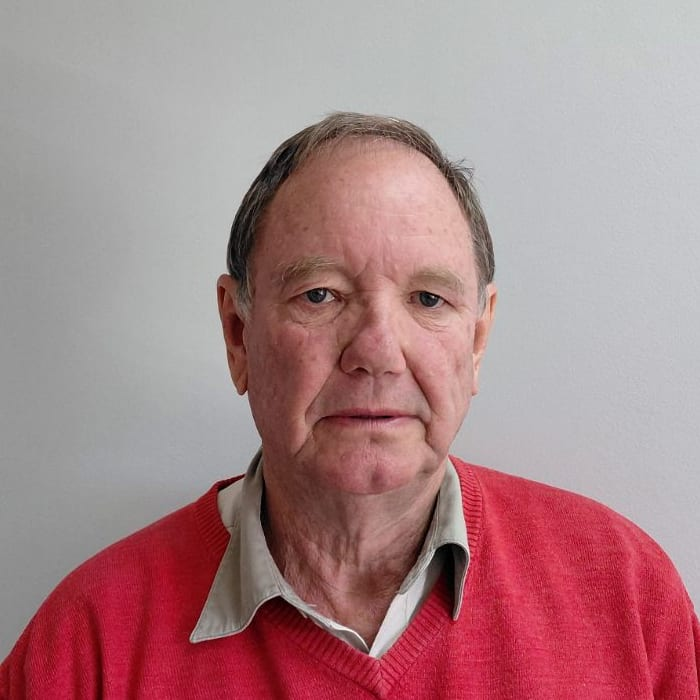

Advice You Can Trust,
Systems That Last
We don't sell equipment and we have no supplier relationships to protect. Every design decision is driven by your land, crop, water source and climate conditions.
Built to do one thing well
Water scarcity is one of the defining challenges facing agriculture in Africa and the Middle East. The farms and projects that will feed the next generation need water infrastructure that works, not just on paper, but in the ground, for decades.
We built Ant Consult around one core belief: that getting the engineering right from the start is the most valuable thing you can do for a farm's long-term productivity.

We founded Ant Consult to bring a leaner, more structured model to agricultural water engineering. Every project is delivered through a defined engineering process, with senior engineer involvement from start to finish and recommendations shaped entirely by the needs of your operation.
The name comes from the ant. Small, industrious, and capable of building something far larger than itself through discipline and persistence.
Read Our Story →Engineering water from source to field
Ant Consult designs agricultural water infrastructure for large-scale farming operations across Africa and the Middle East. From feasibility studies and development masterplans to irrigation, pumping and bulk water supply, we help clients plan, build and optimise systems that perform reliably for decades.
Every project follows the same structured engineering process, ensuring consistent quality from feasibility through to final design.
The Ant Implementation Method
Scope drift is one of the most common reasons irrigation projects go over budget. AIM gets the right people around the table early and stress-tests the first draft design before it becomes the final one, so the system your team signs off on is the one that gets built.
Get the right people around the table
Stress-test the initial design
Build alignment before detailed design
Deliver against an agreed scope
Precision in design. Confidence in delivery.
Our work is measured at the point where the design meets the ground. That means construction-ready drawings your contractors can build from without guesswork, detailed bills of quantities with no expensive surprises, and systems your team can operate without ongoing intervention.
We stand behind our work
If your irrigation system is not performing as intended, we will provide a complimentary technical review to identify the cause, optimise system performance, and train your team on effective operation.
Our team brings together more than 50 years of combined experience across agricultural, civil, surveying and quantity surveying disciplines. We operate with a small permanent team, supported by a network of specialists who are brought in based on project requirements. This allows us to scale for large, complex projects without carrying the overhead of a large practice.
You get the right expertise for your project, not an ad hoc effort from the guy in the next office who has time on his hands.

Jon founded Ant Consult to bring structured, independent engineering to large-scale agricultural water infrastructure. He is a degree-qualified Agricultural Engineer (UKZN) and a Registered Professional Engineer with the Engineering Council of South Africa. His work spans irrigation design, bulk water supply, feasibility studies and masterplanning across Africa and the Middle East. Jon is personally involved in every project Ant Consult undertakes, providing clients with direct access to senior engineering expertise from concept through to delivery.
Joana manages Ant Consult's marketing and communications, including the website, content strategy and client-facing materials. With a background in Agricultural Biotechnology and B2B marketing, she translates complex engineering concepts into clear, practical information that helps clients make informed decisions.

With over 30 years of experience in civil engineering, Steve specialises in water, stormwater, sewer and road infrastructure design. He supports Ant Consult on projects requiring specialist civil engineering expertise, bringing practical design experience and technical precision to complex infrastructure developments.
Stefan is a registered Professional Land Surveyor and Professional Planner with expertise in land surveying, master planning and spatial development. His work brings surveying and planning expertise that supports practical, well-informed agricultural and land development projects.
Noel is an experienced Quantity Surveyor supporting greenfield and brownfield infrastructure projects. He provides cost planning, project evaluation and technical advisory services, and acts as a technical expert on complex engineering matters. He also holds separate Arbitration and Mediation qualifications, offering Alternative Dispute Resolution (ADR) services for construction and engineering disputes.

Andrew is an Agricultural Engineer, holding a Master's degree in Agricultural Engineering, with 24 years of experience in water supply and sanitation, specialising in design and contract management. His experience spans urban and rural water supply and sanitation schemes, infrastructure design and construction supervision, giving him extensive practical expertise in delivering water and sanitation infrastructure from design through implementation.
Jed is a Registered Professional Engineering Technologist with 12 years of consulting experience across multidisciplinary civil infrastructure. His expertise spans bulk water pipelines, roads, stormwater, sewer networks and earthworks, with project experience across large-scale residential, commercial and renewable energy developments.

Hans is a sugar industry veteran with 30 years of experience in large-scale sugar estate management. His practical understanding of sugar production, estate operations and irrigation informs Ant Consult's work on sugar industry projects, helping ensure engineering decisions reflect the realities of operating a commercial sugar estate.
We strive to work excellently and honourably in every project, recognising that the quality of our work reflects the character behind it.
Clients are integral members of the project team. The best outcomes come from strong, honest working relationships built over time.
We continuously learn, adapt and improve, so our knowledge and methods stay relevant in an industry that never stops changing.
Sustainability is not a marketing position. It is an engineering responsibility, reflected in every design decision we make.
Expertise is built through listening. The farmers and operators who run our systems every day give us insight that makes the next design better.
Let's bring your project to life
Bring us your project. Thirty minutes with the engineer who would do the work, and an honest read on whether it is worth pursuing.
Pietermaritzburg, 3201
+27 76 375 5043